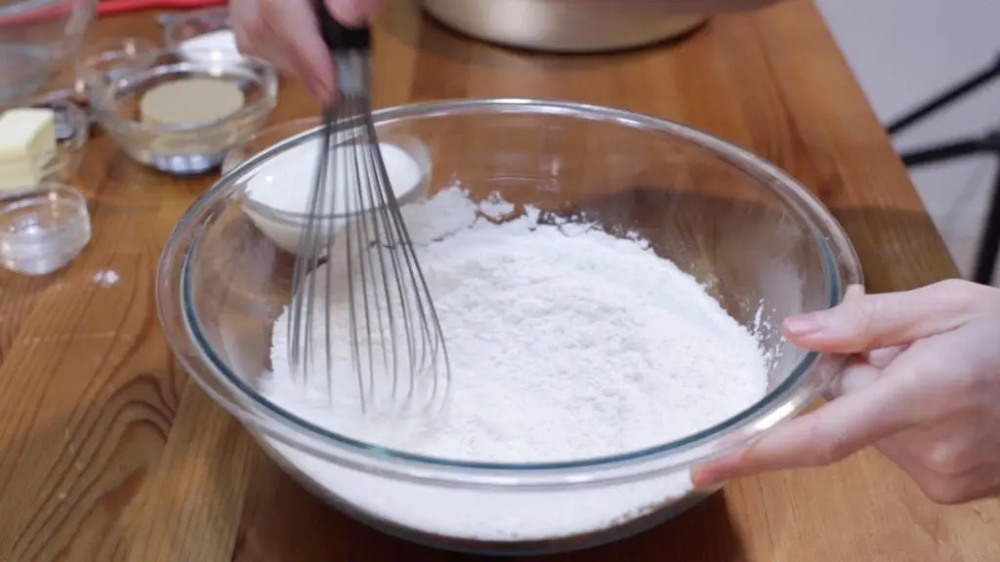
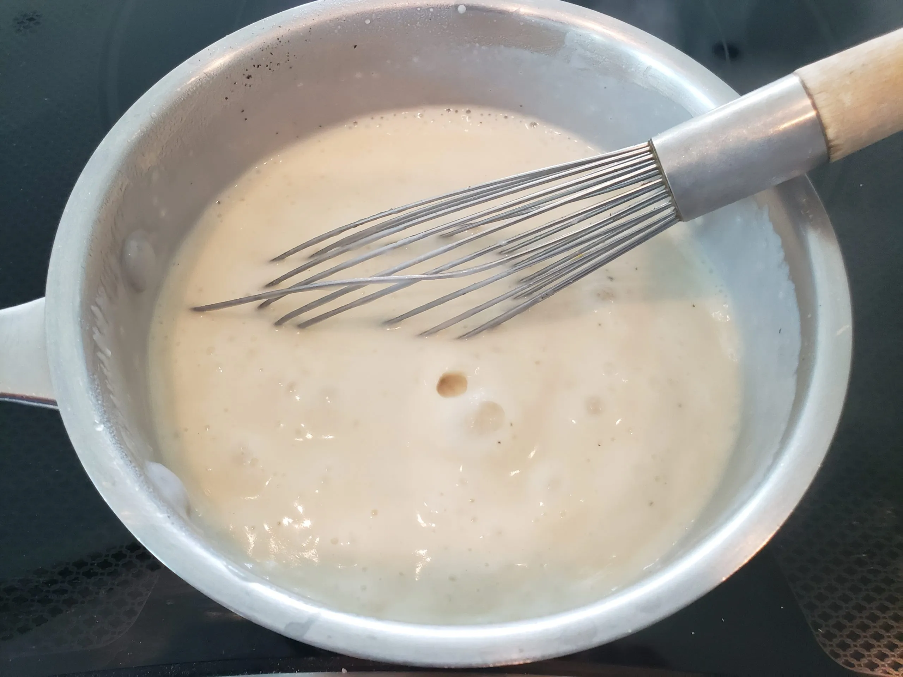
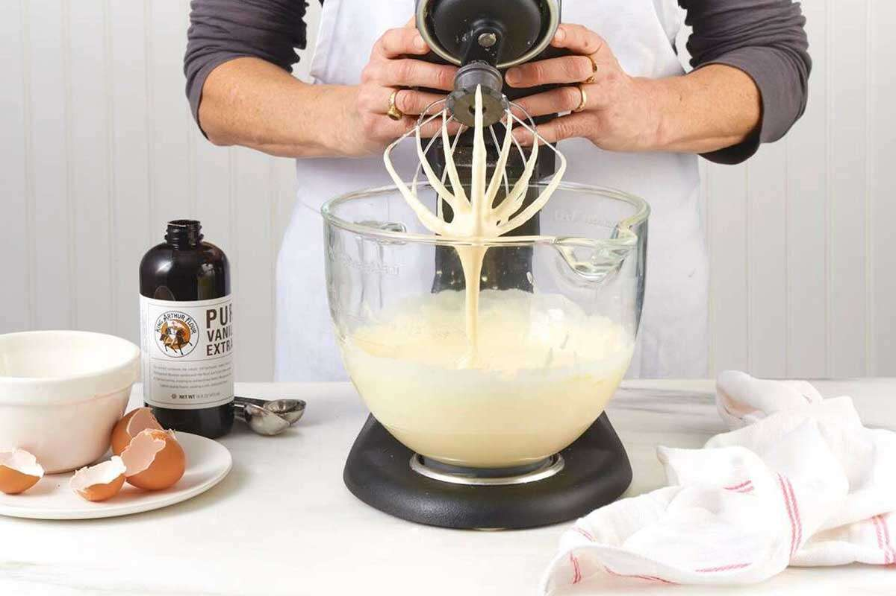
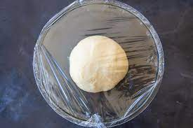
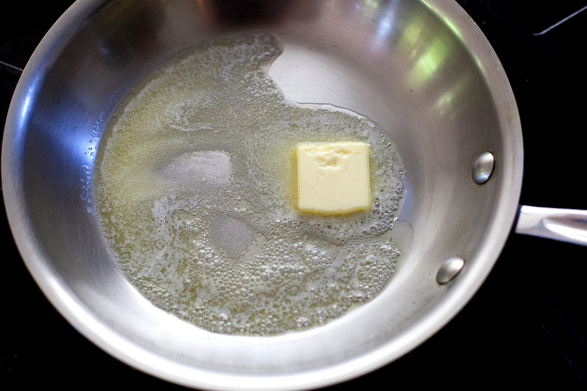
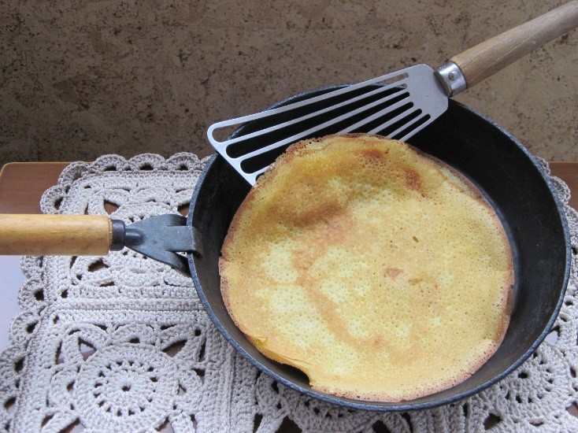
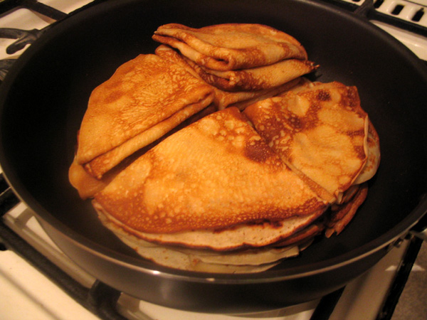
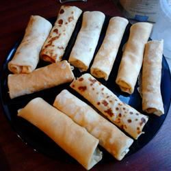
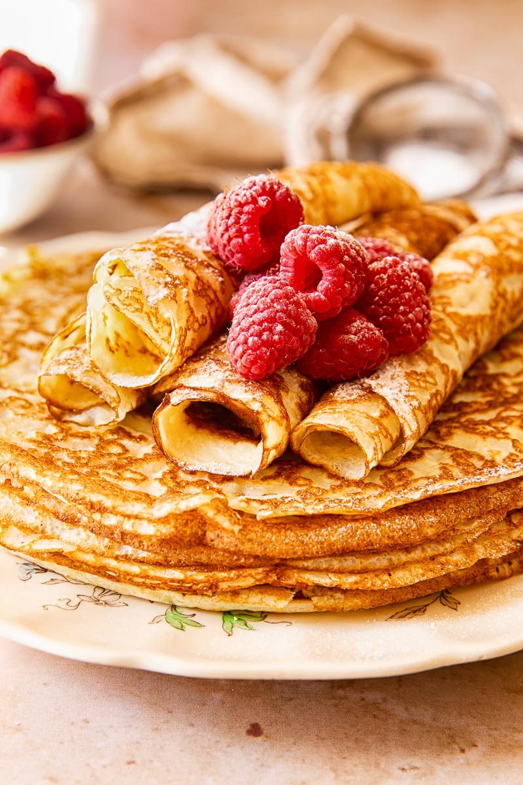

My favourite meal!
my favourite meal is Blini.
The reason i enjoy making and eating Blini is because i have been eating this for all my life and i enjoy this vary much. Blini are large pancakes with a texture slightly
thicker than crepes. The batter comes together easily with only a handful of
ingredients and about 15 minutes of rest before cooking in thin layers on a hot skillet.

About блины (Blini, Russian crepes)
- Course Breakfast
- Cuisine Russian
- Prep Time: 10 minutes
- Cook Time: 10 minutes
- Resting Time: 15 minutes
- Total Time: 35 minutes
- Servings: 16 Crepes
Ingredients
- 2¼ cups all-purpose flour
- 1 tablespoon granulated sugar
- ½ teaspoon salt
- 2 cups milk
- 2 large eggs
- 2 tablespoons vegetable oil plus more or butter for the pan
Instructions
- In a large bowl, whisk together the flour, sugar, and salt.

- Slowly whisk in the milk until combined and no lumps remain.

- Whisk in the eggs, followed by the vegetable oil. If too thick, slowly add a little more milk. If too thin, slowly add a little more flour.

- Cover the bowl and allow to rest at room temperature for 15-30 minutes.

- Place a large nonstick skillet or pan over medium low heat. Lightly grease with oil or butter.

- Once thoroughly heated, add 1/4 – 1/3 cup (60-80 milliliters) batter to the center and immediately tilt the pan in a circle to coat the bottom in a thin layer.

- Cook until set on the top and the bottom turns golden, about 2 minutes.

- Flip and cook until the other side is golden, 30 seconds to 1 minute. Remove to plate. Rub the pan with more oil and repeat with remaining batter.

- Serve immediately with sour cream, jam, honey, berrys, and/or sweetened condensed milk.
